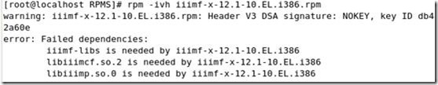

redhat enterprise 5 在 VMware 6.5 中中文显示乱码的解决办法
事情的经过是这样的 记得以前曾经在VMware 5.5.3 上装过redhat 估计是9吧 当初我选的是图形界面，安装过程也是人机交互的，有可供我的选项
现如今 VMware 换成了6.5 发现在安装 redhat Enterprise 5 的时候全变成了自动安装，本想VMware 换个高级一点的，心里用着也爽，哪成想，我在别的机器上用VMware5.5.3 用同样的镜像，不但有安装过程，而且还能显示中文，在我这、新建虚拟机、挂上镜像之后一切仿佛变成了全自动，而且最终的界面还是英文，虽说linux要学的是字符界面，但是心里却总是不那么甘心，下面将我遇到的问题和解决方法与大家分享下，
这就是我装完系统的模样
选择语言 更改试试看吧
看到这个中文了吧，我改成中文重启之后，原来所有的汉字就全变成小方框了，看着那叫一个堵
输入用户名 密码进去改成英文吧
改过之后 连位置都变了，还好我记得你的图标
改回 英语吧 ，最起码比方块强多了
老老实实的 重启之后 想了很多办法 试了n次均不顶事
比如
/etc/sysconfig/i18n 设置为
LANG="zh_CN.GB18030"
LANGUAGE="zh_CN.GB18030:zh_CN.GB2312:zh_CN"
SUPPORTED="zh_CN.GB18030:zh_CN:zh:en_US.UTF-8:en_US:en"
SYSFONT="lat0-sun16"
或者类似的 将LANG=后面的内容改了一圈，最后还是方框
最终解决方案
找到redhatlinux 9的安装镜像，我估计 Enterprise 5中也有类似的rpm包但是我不知道是哪一个，
找到第三个安装镜像，
挂上
[root@localhost ~]# mount /dev/cdrom /mnt/cdrom
mount: block device /dev/cdrom is write-protected, mounting read-only
[root@localhost ~]# cd /mnt/cdrom
[root@localhost cdrom]# ls
EULA GPL RedHat RPM-GPG-KEY TRANS.TBL
[root@localhost cdrom]# cd RedHat
[root@localhost RedHat]# ls
RPMS TRANS.TBL
[root@localhost RedHat]# cd RPMS
[root@localhost RPMS]# rpm -ivh ttfonts-zh_CN-2.14-6.noarch.rpm

[root@localhost RPMS]# rpm -ivh iiimf-le-chinput-0.3-16.i386.rpm --aid
[root@localhost RPMS]# rpm -ivh iiimf-x-12.1-10.EL.i386.rpm

有错误耶
[root@localhost RPMS]# rpm -ivh iiimf-gnome-im-switcher-12.1-10.EL.i386.rpm
[root@localhost RPMS]# service iiim status
iiim: unrecognized service
[root@localhost RPMS]#
之后 reboot 重启一下
看看吧 亲爱的汉字又回来了
这几个 rpm 包 我已经 提取出来了 大概有 10M 左右 附件中传不了，如果大家 手头 没有 redhat 9的安装镜像 留个邮箱给你发一下 ，但愿能对大家有帮助
最后补充一下，其实这个问题早就已经不是问题了，其实就是VMware默认自动安装为专家模式，就自动的选择了英文语言，像gcc等软件包都没有装，说简单点还是自己对VMware这个工具不太了解，详细解决请参考
http://yuzeying.blog.51cto.com/644976/192900
这样那些软件包就没什么必要了
本文出自 “老五的成长记录” 博客，请务必保留此出处http://yuzeying.blog.51cto.com/644976/150986